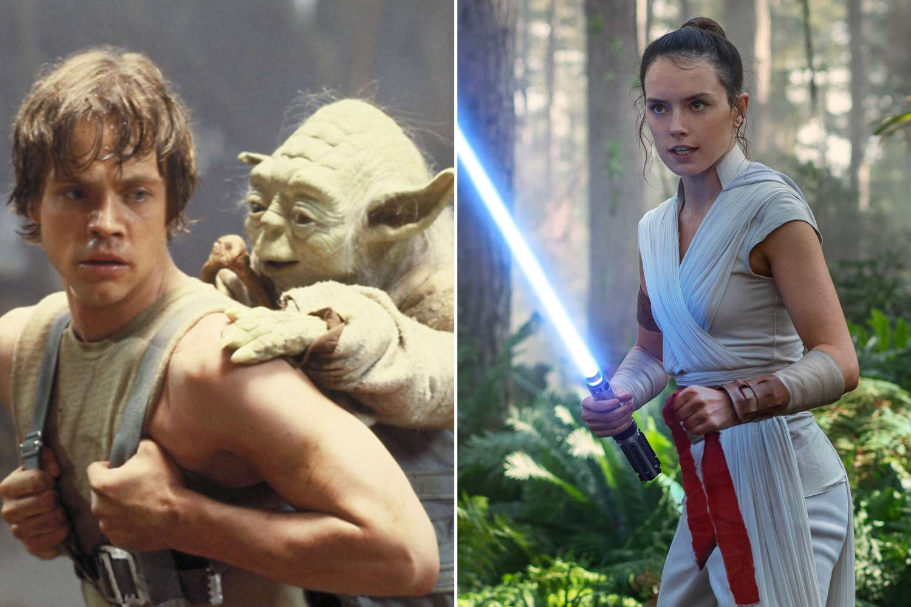
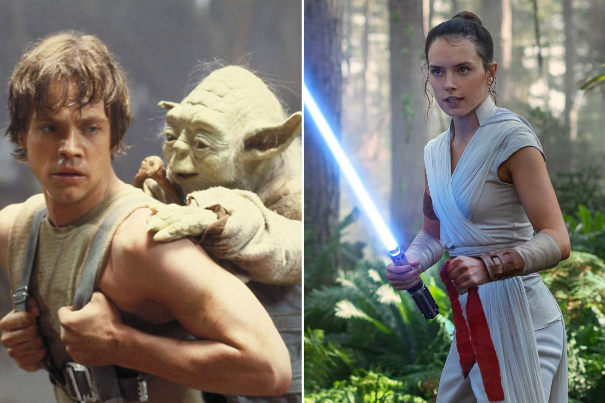
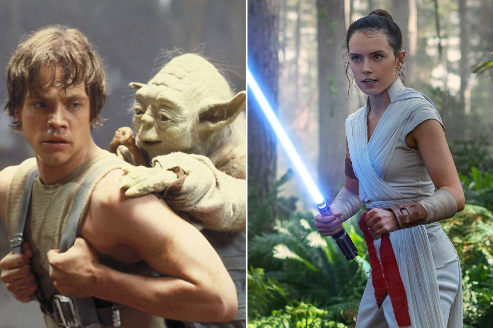

Personajes de Star wars
Star Wars es una saga épica de ciencia ficción creada por George Lucas. La historia se desarrolla en una galaxia ficticia, en un pasado muy lejano, y sigue las aventuras de diversos personajes mientras luchan entre el bien y el mal, la luz y la oscuridad.
Star Wars tiene una rica variedad de personajes que han capturado la imaginación de millones de fans en todo el mundo.
Además de las películas, Star Wars cuenta con una amplia gama de contenido expandido, que incluye series de televisión, libros, cómics y videojuegos, que exploran diferentes aspectos del universo y sus personajes. La saga ha dejado un impacto duradero en la cultura popular y ha generado una base de fans apasionada en todo el mundo.

Brayna Abigail Flores Rodriguez
5to BACO
Liceo Valle del sol